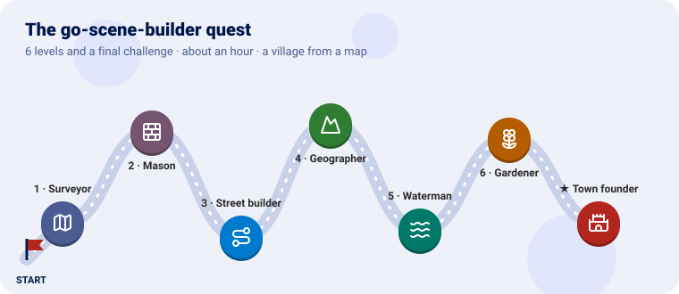
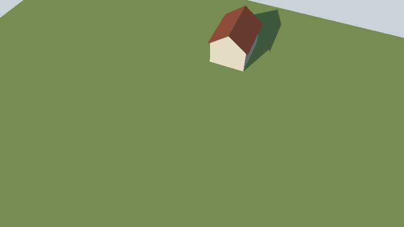
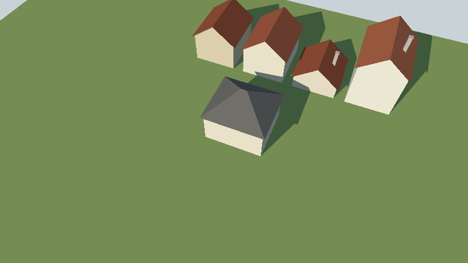
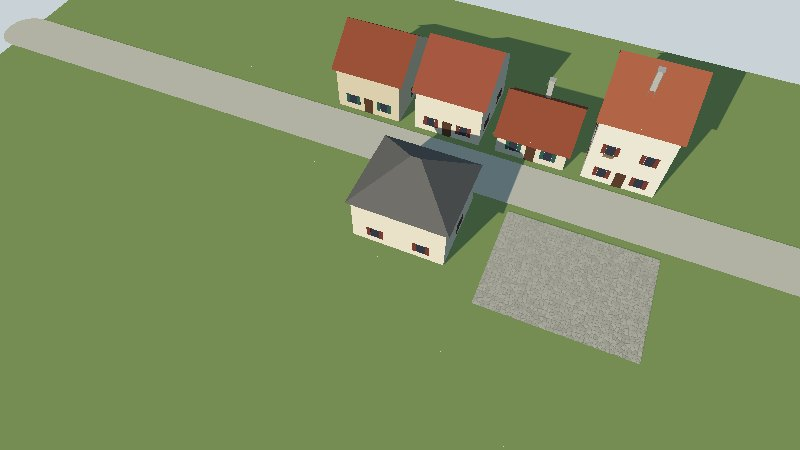
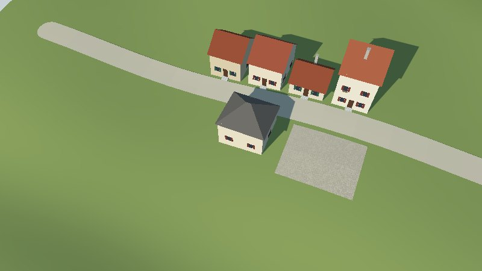
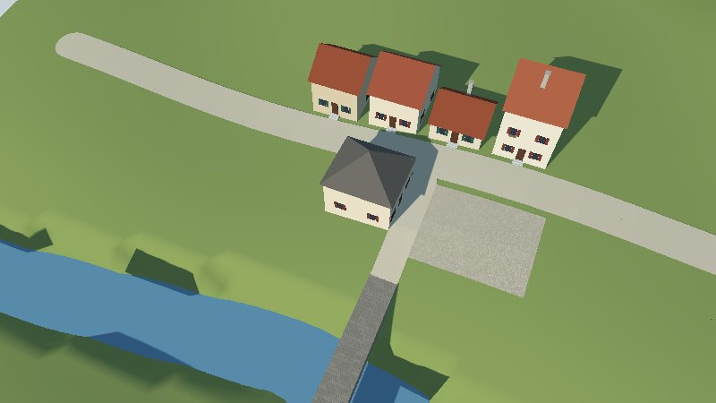
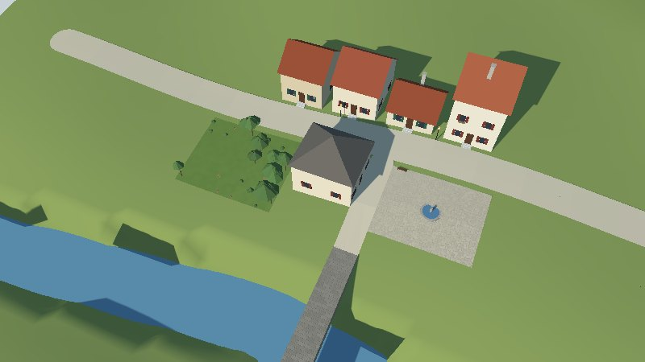
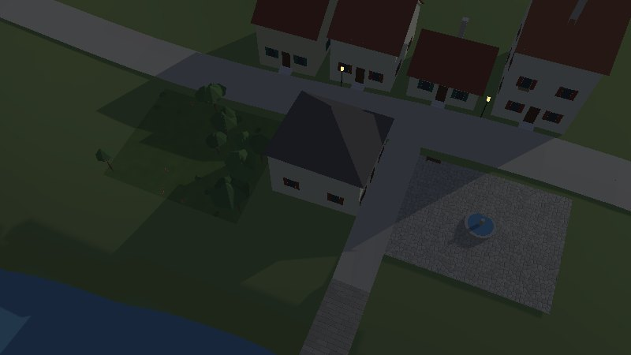
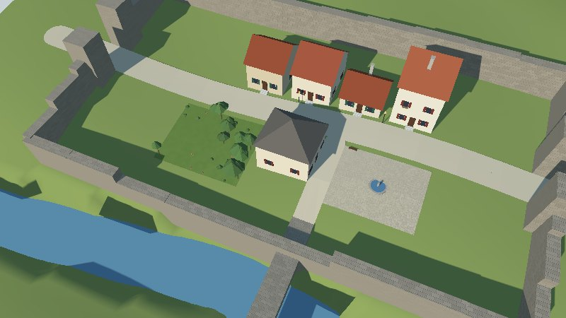
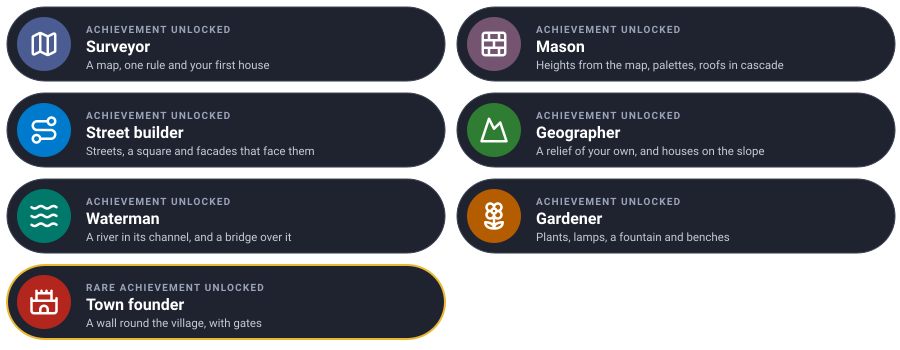

Turn a flat map into a village you can walk through, one level at a time. Each level teaches one piece of go-scene-builder and ends with a new scene in go-renderer’s viewer.

We will build a village: houses along a street, a square with a fountain, a garden, a river with a bridge, lamps that light up at night, and in the end a wall round it all, with gates.
Every level has the same shape: the idea (explained with something from everyday life), the
files, a checkpoint to know it works, and an optional bonus. You write two files and keep
growing them: map.geojson (what is where) and style.yaml (what things look like).
You need Go 1.25, GEOS (sudo apt install libgeos-dev, brew install geos) and go-renderer’s
viewer to look at the result:
git clone https://github.com/akrck02/go-scene-builder
git clone https://github.com/akrck02/go-renderer
mkdir village && cd village
Keep two commands at hand; after each change, build and look:
# build the scene
go run ../go-scene-builder/cmd/build-scene -map map.geojson -style style.yaml -out village.glb
# look at it: drag to turn, scroll to zoom, Tab to walk, N for the night
go run ../go-renderer/cmd/visor village.glb
The pictures were taken with -look-at 0,0 -zoom 0.45 added to the viewer.
This is where everything will live by the end:
village/
├── map.geojson ← every level
├── style.yaml ← every level
├── relief/main.go ← level 4: writes the two files below
├── relieve.json
├── relieve.f32
└── models.yaml ← level 6
| Mission | Pieces | Time |
|---|---|---|
| One house on a meadow | GeoJSON features, ground and volume shapes, a gable roof |
8 min |
A surveyor draws a plan: this outline is a house, that one a field. The plan says where, never how it looks. That is the style’s job, like a dress code for a party: “houses wear cream walls and a red roof”. Change the dress code and the same plan becomes another village.
Every feature on the map has an id (its name, stable from one version to the next) and a kind
(a free word: house, meadow; the style gives it a meaning).
map.geojson, in metres, x to the east and y to the north, centred ten metres south of zero:
{
"type": "FeatureCollection",
"properties": {"units": "m", "axes": "east-north", "origin": [0, -10]},
"features": [
{"type": "Feature", "properties": {"id": "meadow", "kind": "meadow"}, "geometry": {"type": "Polygon", "coordinates": [[[-60, 30], [60, 30], [60, -60], [-60, -60], [-60, 30]]]}},
{"type": "Feature", "properties": {"id": "house-1", "kind": "house", "floors": 2}, "geometry": {"type": "Polygon", "coordinates": [[[-4, 4], [4, 4], [4, 14], [-4, 14], [-4, 4]]]}}
]
}
style.yaml:
units: m
environment: {sun: [220, 35]}
rules:
- when: {kind: meadow}
shape: {role: ground}
color: "#8fa35a"
- when: {kind: house}
shape: {role: volume, height: 6}
walls: {color: "#e9dfc9"}
roof: {recipe: gable, pitch: 38, color: "#a4553a"}
ground drapes a polygon over the ground; volume raises a block from it, height metres up to
where the roof starts.
The build prints [ground 1 volume 1], and the viewer shows a cream house with a red roof on a
green meadow.

Make the house a modern box with a flat roof and grey walls.
walls: {color: "#9e9e99"}
roof: {recipe: flat}Learn more: The pipeline · Style rules
| Mission | Pieces | Time |
|---|---|---|
| Five houses, each its own height and colour | properties, arithmetic, palettes, the cascade | 8 min |
Rules work like a style sheet, in cascade: every rule that matches adds its values, and when two say the same thing, the later one wins. Write the general look first (“houses have gable roofs”) and the exceptions after (“shops have hip roofs”).
A palette is a box of paint pots: each house takes one, always the same one for the same id, so the street does not look painted from one bucket.
Add four houses to the map’s features (the map can say anything the style reads: here floors and
use):
{"type": "Feature", "properties": {"id": "house-2", "kind": "house", "floors": 1}, "geometry": {"type": "Polygon", "coordinates": [[[6, 4], [14, 4], [14, 12], [6, 12], [6, 4]]]}},
{"type": "Feature", "properties": {"id": "house-3", "kind": "house", "floors": 3}, "geometry": {"type": "Polygon", "coordinates": [[[16, 4], [24, 4], [24, 15], [16, 15], [16, 4]]]}},
{"type": "Feature", "properties": {"id": "house-4", "kind": "house", "floors": 2}, "geometry": {"type": "Polygon", "coordinates": [[[-14, 4], [-6, 4], [-6, 13], [-14, 13], [-14, 4]]]}},
{"type": "Feature", "properties": {"id": "house-5", "kind": "house", "floors": 2, "use": "shop"}, "geometry": {"type": "Polygon", "coordinates": [[[-4, -4], [6, -4], [6, -13], [-4, -13], [-4, -4]]]}}
Replace the house rule, and add the shop’s exception after it:
- when: {kind: house}
shape: {role: volume, height: "3 + (floors - 1) * 3"}
walls: {color: ["#e9dfc9", "#efe4cf", "#e2d2b4", "#f1ead9"]}
roof: {recipe: gable, pitch: 38, ridge: long, eaves: 0.4, color: ["#a4553a", "#9a4b33", "#b0613f"], chimneys: {share: 0.5}}
stonework: {plinth: 0.6, quoins: true}
- when: {kind: house, use: shop}
roof: {recipe: hip, color: "#6f6a64"}
"3 + (floors - 1) * 3" reads each house’s floors: three metres for the ground floor and three
for each one above. chimneys: {share: 0.5} puts one on half of the houses; stonework adds a stone
base and corner stones.
Five houses of one, two and three floors, in slightly different creams and reds, two with chimneys; the shop’s roof is grey and slopes on four sides.

Shops with three floors or more get darker walls. Selectors take a number range.
- when: {kind: house, use: shop, floors: {min: 3}}
walls: {color: "#cdbb98"}| Mission | Pieces | Time |
|---|---|---|
| A street, a square, and doors facing the street | lines with a width, materials, relations, facades | 10 min |
A house alone does not know where its front door goes. It needs to look around: which of its sides faces a street? That is a relation, worked out between blocks after they are built, like neighbours who know which house is opposite. The facade recipe then dresses that side with a door, windows with shutters and flower boxes.
Add a street (a line, widened by its width) and a square:
{"type": "Feature", "properties": {"id": "high-street", "kind": "street", "width": 6}, "geometry": {"type": "LineString", "coordinates": [[-60, 0], [60, 0]]}},
{"type": "Feature", "properties": {"id": "square", "kind": "square"}, "geometry": {"type": "Polygon", "coordinates": [[[10, -4], [26, -4], [26, -16], [10, -16], [10, -4]]]}}
The whole style now:
units: m
environment: {sun: [220, 35]}
relations:
facing: {when: {kind: street}, reach: 20}
rules:
- when: {kind: meadow}
shape: {role: ground}
color: "#8fa35a"
- when: {kind: street}
shape: {role: ground, width: "width", lift: 0.3}
color: "#d8cdb4"
- when: {kind: square}
shape: {role: ground, lift: 0.3}
color: "#c9bfa8"
material: {pattern: cobbles, scale: 0.4}
- when: {kind: house}
shape: {role: volume, height: "3 + (floors - 1) * 3"}
walls: {color: ["#e9dfc9", "#efe4cf", "#e2d2b4", "#f1ead9"]}
roof: {recipe: gable, pitch: 38, ridge: along_street, eaves: 0.4, color: ["#a4553a", "#9a4b33", "#b0613f"], chimneys: {share: 0.5}}
stonework: {plinth: 0.6, quoins: true}
facade:
door: {color: "#5b3a26", round: 0.5}
windows: {shutters: ["#2f5d50", "#7a3b2e"]}
flower_boxes: {share: 0.5, flowers: ["#d23c4f", "#f2c14e"]}
sides: {spacing: 4.5}
- when: {kind: house, use: shop}
roof: {recipe: hip, color: "#6f6a64"}
relations.facing: sides within 20 metres of a street face it.lift: 0.3 keeps the street a little over the meadow, so the two do not flicker.material: {pattern: cobbles} draws paving stones on the square with no texture: go-renderer
makes the pattern as it draws.ridge: along_street: the roof’s ridge runs along the street.facade.sides gives the other walls plainer windows, further apart.The build says 5 facing a street. Each house has a door and windows on its street side, some with
flowers; the square is paved.

facade:
…
ivy: {share: 0.3}
lamp: {}Learn more: Decoration: facades
| Mission | Pieces | Time |
|---|---|---|
| Ground with a slope, and houses that stand on it | the relief, terrain colours | 10 min |
A relief is a chessboard of heights: every square says how high the ground is there. It
lives in two files: a small label (relieve.json: how many squares, how big, where) and the
heights themselves (relieve.f32: one number per square, row by row from the north).
Houses on a slope stand halfway between their lowest and highest corners: cut into the hill uphill, on a stone base downhill.
Write the relief with a small Go program, relief/main.go:
// Command relief writes the ground the village stands on: relieve.json, the grid's size and
// place, and relieve.f32, a height in metres for every cell, row by row from the north.
package main
import (
"encoding/binary"
"encoding/json"
"log"
"math"
"os"
)
func main() {
const (
columns, rows = 80, 70 // cells
cell = 2.0 // metres a side
west, north = -80.0, 70.0
)
heights := make([]float32, 0, columns*rows)
for row := range rows {
for column := range columns {
east := west + (float64(column)+0.5)*cell
northing := north - (float64(row)+0.5)*cell
heights = append(heights, float32(height(east, northing)))
}
}
header := map[string]any{"columns": columns, "rows": rows, "cell": cell, "west": west, "north": north, "units": "m"}
content, _ := json.Marshal(header)
if err := os.WriteFile("relieve.json", content, 0o644); err != nil {
log.Fatal(err)
}
file, err := os.Create("relieve.f32")
if err != nil {
log.Fatal(err)
}
defer file.Close()
if err := binary.Write(file, binary.LittleEndian, heights); err != nil {
log.Fatal(err)
}
}
// height is a slope rising to the north, a little rolling, down to a valley in the south.
func height(east, north float64) float64 {
slope := 0.12 * north
rolling := 1.5 * math.Sin(east/14) * math.Cos(north/18)
valley := -4 * math.Exp(-math.Pow((north+38)/14, 2))
return 20 + slope + rolling + valley
}
go mod init example.com/village # once, for the program
go run ./relief # writes relieve.json and relieve.f32
The terrain now replaces the meadow: remove the meadow from the map and its rule from the
style, and add to the style, under environment:
terrain: {color: "#8fa35a", bands: [{above: 26, color: "#7d8f4c", blend: 3}]}
Build with the relief:
go run ../go-scene-builder/cmd/build-scene -map map.geojson -relief relieve.json -style style.yaml -out village.glb
The ground rises to the north and rolls a little; the street follows it, the houses stand on it with stone bases where it falls away, and the ground is darker above 26 metres.

Learn more: Houses on slopes · The pipeline: what goes in
| Mission | Pieces | Time |
|---|---|---|
| A river in the valley, and a bridge over it | water shapes, level lines |
8 min |
Water always lies level, and a river digs its own bed: with a relief, the builder cuts a channel so the water stays under its banks and never runs uphill. A bridge is a plank laid level from one bank to the other, high enough for the water to pass under.
Add the river, the bridge and a lane from the street to it:
{"type": "Feature", "properties": {"id": "river", "kind": "river", "width": 10}, "geometry": {"type": "LineString", "coordinates": [[-60, -40], [0, -32], [60, -44]]}},
{"type": "Feature", "properties": {"id": "bridge", "kind": "bridge", "width": 4}, "geometry": {"type": "LineString", "coordinates": [[8, -20], [8, -52]]}},
{"type": "Feature", "properties": {"id": "lane", "kind": "street", "width": 4}, "geometry": {"type": "LineString", "coordinates": [[8, -4], [8, -20]]}}
And two rules, before the houses:
- when: {kind: river}
shape: {role: water, width: "width"}
- when: {kind: bridge}
shape: {role: line, follow: level, thickness: "width", height: 0.5}
color: "#9c9486"
material: {pattern: masonry, scale: 0.5}
A blue river crosses the valley in the south, in a channel of its own; a stone bridge carries the lane over it.

Learn more: Rivers and bridges
| Mission | Pieces | Time |
|---|---|---|
| A garden, lamps that light at night, a fountain and benches | plants, model libraries, glow | 10 min |
A model library is a box of toys: a lamp, a fountain, a bench, each built once from simple parts (boxes, cylinders, cones, blobs). The map places them, or a recipe sows them over a ground, and go-renderer draws every copy of a toy in one go, so a hundred cost no more than one.
models.yaml, in metres, the origin on the ground:
models:
lamp:
parts:
- {shape: cylinder, radius: 0.06, height: 3, color: "#2b2b2b"}
- {shape: box, size: [0.3, 0.4, 0.3], at: [0, 3, 0], color: "#ffd98a", material: {kind: glow}}
fountain:
parts:
- {shape: cylinder, radius: 1.6, height: 0.5, sides: 16, color: "#b9b2a5"}
- {shape: cylinder, radius: 1.3, height: 0.52, sides: 16, color: "#5d8fb0"}
- {shape: cylinder, radius: 0.2, height: 1.4, color: "#b9b2a5"}
bench:
parts:
- {shape: box, size: [1.6, 0.08, 0.4], at: [0, 0.42, 0], color: "#6b4a2e"}
- {shape: box, size: [0.1, 0.42, 0.4], at: [-0.7, 0, 0], color: "#3b3b3b"}
- {shape: box, size: [0.1, 0.42, 0.4], at: [0.7, 0, 0], color: "#3b3b3b"}
The lamp’s glass is glow: it shines in the dark. Add a garden, two lamps and the fountain:
{"type": "Feature", "properties": {"id": "garden", "kind": "garden"}, "geometry": {"type": "Polygon", "coordinates": [[[-24, -4], [-6, -4], [-6, -18], [-24, -18], [-24, -4]]]}},
{"type": "Feature", "properties": {"id": "lamp-1", "kind": "lamp"}, "geometry": {"type": "Point", "coordinates": [-2, 3]}},
{"type": "Feature", "properties": {"id": "lamp-2", "kind": "lamp"}, "geometry": {"type": "Point", "coordinates": [15, 3]}},
{"type": "Feature", "properties": {"id": "fountain", "kind": "fountain"}, "geometry": {"type": "Point", "coordinates": [18, -10]}}
In the style, name the library after units:
models: [models.yaml]
and add, before the houses:
- when: {kind: garden}
shape: {role: ground, lift: 0.05}
color: "#6f8f44"
material: {pattern: grass, scale: 0.5}
decorate: [{recipe: plants, density: 0.2, trees: 0.3, beds: 0.3, clear: 1}]
- when: {kind: lamp}
shape: {role: model, model: lamp}
- when: {kind: fountain}
shape: {role: model, model: fountain}
- when: {kind: square}
decorate: [{recipe: scatter, density: 0.01, models: {bench: 1}, edge: true}]
The square’s second rule adds to the first: the cascade again.
Shrubs, trees and flower beds in the garden, a fountain in the square, benches at its edge, lamps
by the street. Press N in the viewer: the lamps glow.


Sow lilies over the garden, with a model of your own.
lily:
parts:
- {shape: cylinder, radius: 0.01, height: 0.35, color: "#4f6b35"}
- {shape: petals, count: 6, length: 0.07, width: 0.035, tilt: 35, at: [0, 0.35, 0], color: ["#7da7e0", "#f2f0e8"]}Build a wall round the village, 7 metres high with battlements, and a gate with a tower at each side wherever the street goes through it.
Hint: the wall is a closed line on the map, its
kindiswall. A line shape hasheightandthickness;openings: {where: …, width}cuts gaps where a street crosses, and thegate_towersrecipe stands towers beside them.
Try it on your own first, then compare with the solution.

{"type": "Feature", "properties": {"id": "wall", "kind": "wall"}, "geometry": {"type": "LineString", "coordinates": [[-45, 22], [45, 22], [45, -26], [-45, -26], [-45, 22]]}} - when: {kind: wall}
shape: {role: line, height: 7, thickness: 2}
color: "#a59c8c"
material: {pattern: masonry, scale: 0.6}
battlements: {height: 1, width: 1, gap: 1}
openings: {where: {kind: street}, width: 6}
decorate: [{recipe: gate_towers, size: 5, height: 11}]
You turned a few lines of JSON into a village with a river, gardens and walls, and every look in it comes from rules you wrote.
| Idea | Difficulty | Hint |
|---|---|---|
| A second street, and houses facing both | ⭐ | Another street line; the relations do the rest |
| A round tower | ⭐ | A point with shape: {role: point, size: 8, height: 15, form: round} |
| A forest by biome | ⭐⭐ | A layer of categories, -layer biome=biomes.json, and terrain.biomes (biomes) |
| A model made in Blender | ⭐⭐ | file: lamp.glb in the library, in metres, y up |
| A town that grows by itself | ⭐⭐⭐ | go-simulator’s urban plugin builds on the same rules |
| You see | Why, and what to do |
|---|---|
pkg-config: geos not found |
Install GEOS: libgeos-dev on Debian and Ubuntu, geos with Homebrew |
| The build lists a feature among its first warnings | No rule styles its kind, or a value is wrong: the warning says which |
| The viewer shows nothing, or only grey | Every feature is none, or far from origin: check the map’s origin and units |
| A street flickers over the ground | Give it a lift (a few tenths of a metre) |
0 facing a street |
relations.facing is missing, or its reach is too short for the gap between houses and street |
| Houses float or sink | Without a relief the ground is flat; with one, check that the relief covers the whole map |